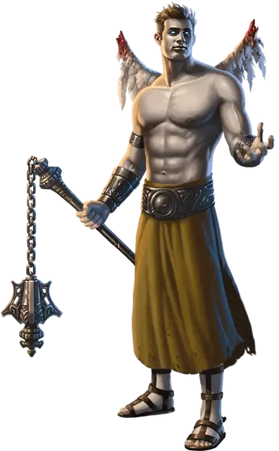

Сияющий идол
Radiant Idol
Большой Небожитель, законно-злой

Класс Доспеха 18 (природный доспех)
Хиты 142 (15к10 + 60)
Скорость 40 футов
| мод | спас | ||
|---|---|---|---|
| СИЛ | 23 | +6 | +6 |
| ЛОВ | 18 | +4 | +4 |
| ТЕЛ | 19 | +4 | +4 |
| мод | спас | ||
|---|---|---|---|
| ИНТ | 17 | +3 | +3 |
| МДР | 20 | +5 | +9 |
| ХАР | 21 | +5 | +9 |
Навыки Восприятие +9, Обман +9, Проницательность +9, Убеждение +9
Сопротивление урону излучение; дробящий, колющий, рубящий от немагических атак
Иммунитет к состояниям очарование, испуг, истощение
Чувства тёмное зрение 120 футов, пассивное Восприятие 19
Языки Все, Телепатия 120 фт.
Опасность 11 (7200 опыта)
Бонус мастерства +4
Особенности
Аура ложной божественности. Существо, начинающее свой ход в пределах 30 футов от сияющего идола должно преуспеть в спасброске Мудрости Сл 17 (при условии, что сияющий идол дееспособен). В случае провала существо становится очарованным идолом. Очарованное существо в конце каждого своего хода может повторять спасброски, пока не преуспеет. В случае успеха оно получает иммунитетом к ауре ложной божественности на следующие 24 часа.
Врожденное колдовство. Базовой характеристикой сияющего идола является Харизма (Сл спасброска от заклинания 17). Он может накладывать следующие заклинания, не нуждаясь в материальных компонентах:
• Неограниченно: очарование личности [charm person], лечение ран [cure wounds], маскировка [disguise self], чудотворство [thaumaturgy]
• 1/день каждое: общение [commune], подчинение личности [dominate person], нашествие насекомых [insect plague], множественное внушение [mass suggestion], оживление [raise dead].
Сопротивление магии. Идол совершает с преимуществом спасброски от заклинаний и прочих магических эффектов.
Действия
Мультиатака. Сияющий идол совершает две рукопашные атаки.
Цеп. Рукопашная атака оружием: +10 к попадание, досягаемость 5 футов, одна цель. Попадание: 10 (1к8+6) дробящего урон плюс 18 (4к8) урона излучением.
Удар излучением (1/день). Сияющий идол выбирает точку на земле, которую он может видеть в пределах 60 футов от себя. В выбранной точке появляется цилиндр яркого света радиусом 30 футов и высотой 40 футов, который существует до начала следующего хода идола. Каждое существо, начинающее или заканчивающее ход в пределах этого цилиндра, должно преуспеть в спасброске Телосложения Сл 17. Существо получает 36 (8к8) в случае провала и половину этого урона в случае успеха.
Описание
Сияющие идолы были ангелами, изгнанными из Небесного Царства Сирании и низвергнутые на материальный план. Один грех привел к их падению: желание, чтобы им поклонялись смертные. Теперь в царстве смертных сияющие идолы собирают культы преданных последователей.
Падшие ангелы. Ненасытная жажда быть обожаемым может преобразить падшего ангела, физически и умственно. В своем истинном виде сияющие идолы являются искаженными ангелами. Вместо крыльев у них могут быть окровавленные обрубки, или же их крылья утяжелены цепями, символизирующими гордость идола. Сияющий идол маскирует себя, чтобы скрыть свое разложение, представляя всем образ небесной славы.
Тяжесть разложения. Когда сияющий идол достигает значительного числа последователей через лестные слова и демонстрацию силы, его облик начинает трескаться. По мере того , как сияющий идол все глубже погружается в царство материальной власти, он играет со своими последователями, уводя их все глубже в зловещий ритуализм, гедонистическую глупость и фанатическую гибель.
Бессмертная природа. Сияющему идолу не нужны ни вода, ни еда, ни сон